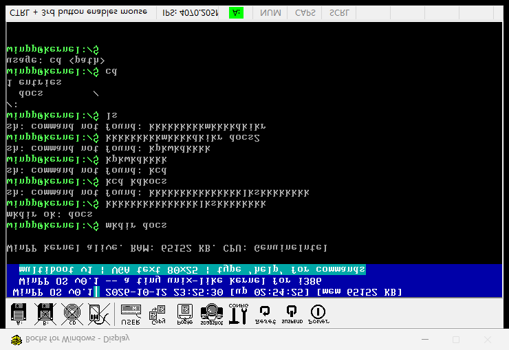
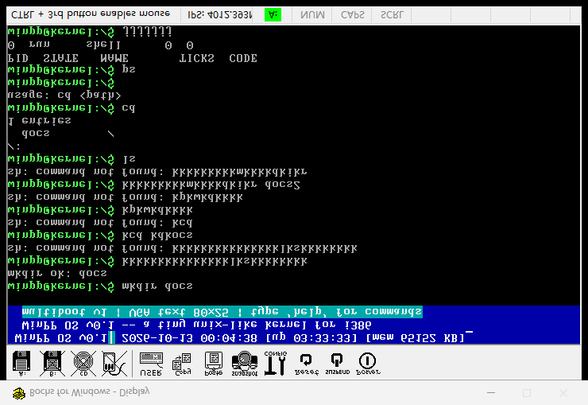
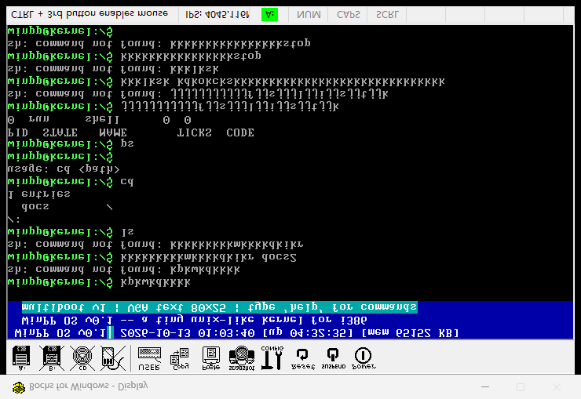

一句话意义：第四阶段的文件系统是"一张只有文件的桌子"；第六阶段升级成"有文件夹、有路径的柜子"——能 mkdir 建目录、能用 dir/file.txt 找文件、能 cd/ls/pwd 在柜子里走动。全部 Bochs 实机 + 串口 + 截图验证通过。
| 编号 | 调用 | 参数 | 说明 |
|---|---|---|---|
| 13 | mkdir | path | 创建目录（支持相对/绝对路径），已存在返回 0 |
| 14 | chdir | path | 切换内核当前目录，目标必须是目录 |
[fs] mkdir '/docs' fd=0 [fs] mkdir '/docs/docs2' fd=1 # 相对路径建目录：cwd=/docs + docs2 [fs] chdir '/docs' # shell cd 生效 [fs] mkdir '/docs' (exists) # 幂等：重复创建返回 0
[fs] open created '/docs/a.txt' fd=1 # 绝对路径创建 [fs] chdir '/docs' # 进程切到 /docs [fs] open created '/docs/b.txt' fd=2 # 相对路径 "b.txt" -> /docs/b.txt！ [fs] open '/docs/b.txt' fd=2 (exist) # ... 循环 800 次：写 "Sub File!" 进 b.txt -> 读回 -> 串口打印
[ls] /:
docs/
1 entries
[ls] /docs/:
docs2/
a.txt 11
b.txt 11
2 entries
[fs] list: 4 entries (cwd=/docs) # docs + docs2 + a.txt + b.txt



fs_ls 把解析结果 "/" 直接拼上 "/" 输出，根目录标题变成双斜杠。修正：path=="/" 时标题输出 "/:"，否则输出 "path/:"。复测：[ls] /: 正确。